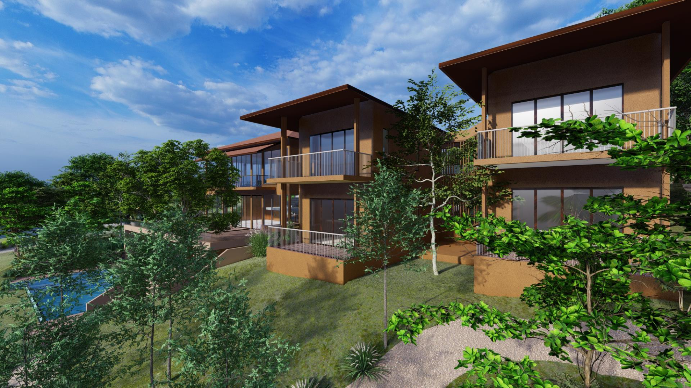
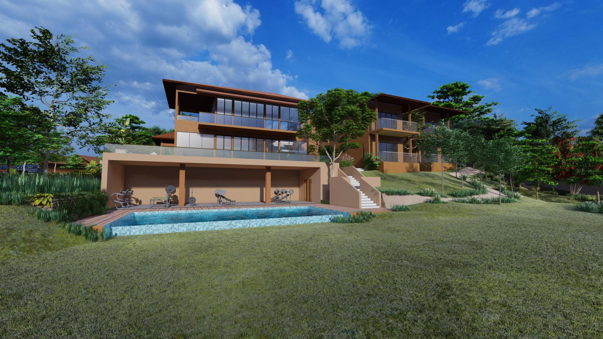
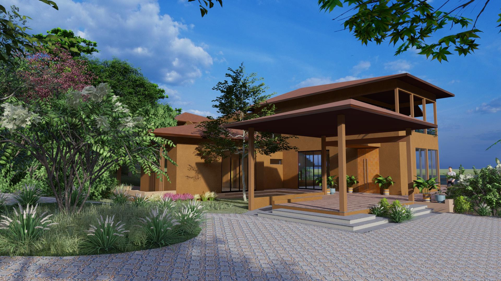
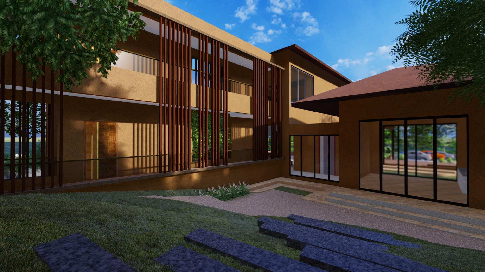
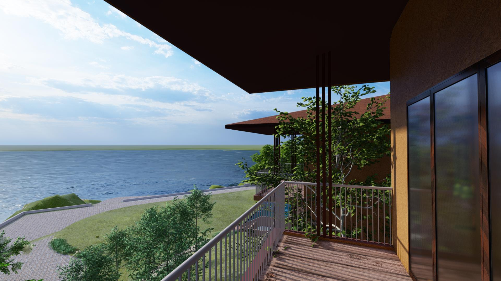
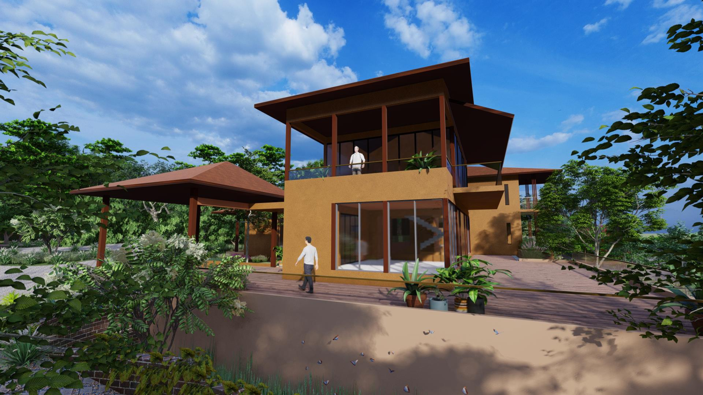

Farmhouse
Hybrid RCC + structural-steel framed superstructure · Structural Design Executive · Vastustruct







Overview
Complete structural design of a contemporary farmhouse. The building is a hybrid framed structure: reinforced-concrete substructure, lower deck, columns and infinity pool, combined with structural-steel roof framing (RHS / SHS members, principal rafters and purlins). The work was executed as Structural Design Executive at Vastustruct (Structural Consultant & Chartered Engineers, Pune) in close coordination with the architect.
Structural works
- Isolated RCC footings of varying sizes matched to column loads and soil conditions (medium soil, SBC ≈ 40 t/m²).
- Plinth beams with detailed bar curtailment and extra support bars at openings.
- Selected columns sized and detailed to accommodate an additional floor in the future without foundation revision.
- RCC lower-deck slab of 200 mm thick provided with top and bottom reinforcement; schedule of RCC slab beams with top, bottom and extra support bars; inverted beams provided wherever required.
- Retaining wall integrated with the lower-deck edge, detailed for earth pressure and continuity of reinforcement.
- Structural beam depth reduced at staircase location to accommodate 164 mm risers while maintaining headroom and reinforcement continuity.
- Infinity Swimming Pool provided with bottom slab, side walls with reinforement along horizontal and vertical both faces, and chamfer bars. Balancing tank at –4.15 m level, fully detailed for hydrostatic loads.
- Structural Steel Roof Framing for Bedroom and kitchen roofs; RCC tie-level beams supporting the steel roof; Cantilever RCC beams introduced at roof level to support the steel framing wherever architectural geometry demanded it. Insert-plate details provided for steel-to-RCC column connections.
- Preparation of Erection drawings for steel columns with cut-outs for RCC beams, base plates and supporting angles.
- Intermediate beams deliberately omitted in the living area (as agreed with architect and client) to preserve clear spans and architectural intent.
- Full BOQ prepared for kitchen-roof steel members (main rafters, struts, beams, purlins) for procurement.
Deliverables Produced
- STAAD models and design reports
- Footing layout and detail drawing
- Floor framing and detail drawings
- Roof framing and section detail drawings
- Swimming pool details
- Undergroung water tank detail drawing
- Bill of Quantities prepared for structural steel roof members
Codes referenced: IS 456 (RCC), IS 800 (Steel), IS 875 (Loads), IS 1893 / relevant seismic provisions as applicable. Design period: 2021.